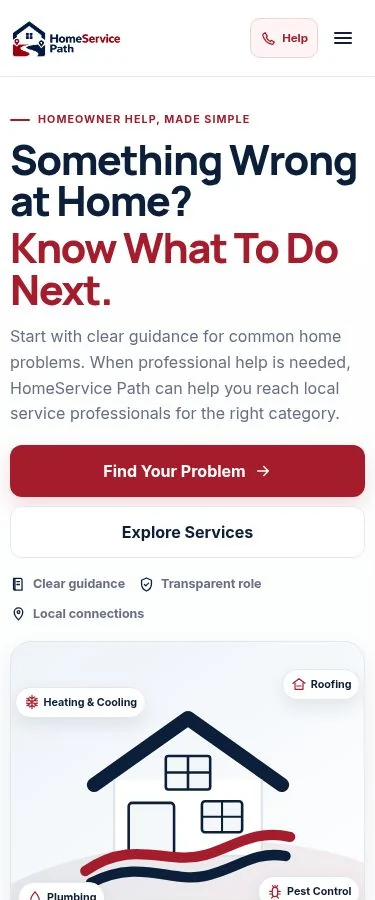
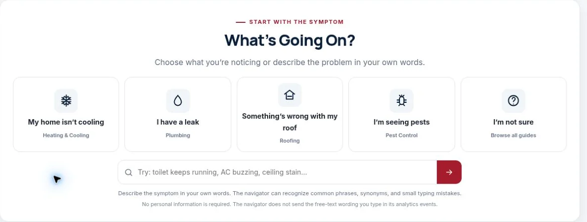
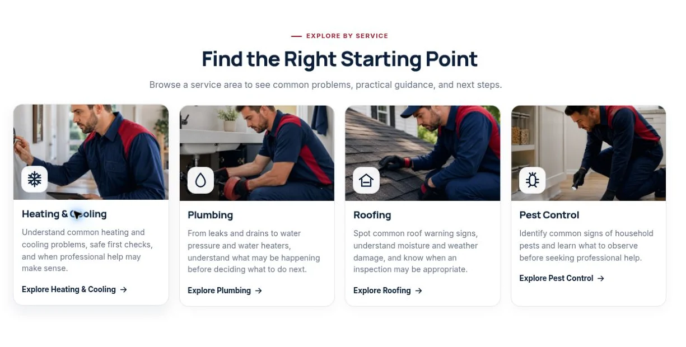
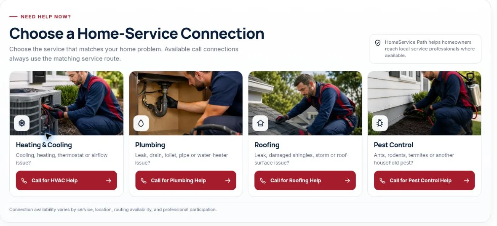
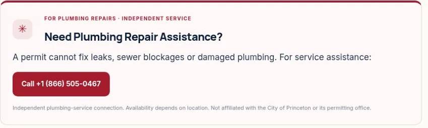

A recurring need
Homeowners encounter maintenance and repair problems throughout the life of a property.
MARKET RESEARCH · BUSINESS STRATEGY · BRAND · SEO · CONTENT SYSTEMS · PAID ACQUISITION
Some research projects end with a report.
This one became a business.
HomeService Path began with a market question: where could a focused digital brand create value in a crowded performance-marketing environment?
The work developed into opportunity selection, brand and website direction, a local content system, acquisition planning and a route from homeowner uncertainty to service intent.
Published footprint verified against the live WordPress inventory on 3 November 2026. Content counts describe what has been built; acquisition routes describe the business model.
01 / THE MARKET BET
The starting point was market research: examining lead-generation and performance-marketing models where commercial intent is already present and useful information can sit between consumer uncertainty and service demand.
Home services stood out because the journey can begin before the homeowner knows exactly what to search for. An AC runs without cooling. Water appears under a sink. A ceiling stain develops. Pests turn up indoors.
The homeowner knows the symptom. They may not know the diagnosis, service category or urgency. That gap shaped the opportunity.
My strategic choice was to enter earlier in the decision process through problem-based guidance, while building a route toward a relevant professional-service connection.
Understand the problem.
Then make the next step clearer.
Homeowners encounter maintenance and repair problems throughout the life of a property.
Service availability, housing, weather and local systems shape the next step.
A relevant service connection can follow a useful explanation of the problem.
People often recognise the symptom before they know the service terminology.
Enter through specific problems and local questions in a competitive market.
Strategic decision framework, reconstructed for this case study. These are the considerations behind the market choice, not a scored competitor study or market-size estimate.
02 / THE BUSINESS MODEL
The model combines organic search, paid search and paid social. Each route has a different role: answer an existing question, reach immediate service intent or test problem awareness and messaging.
An owned library of useful content sits underneath acquisition activity. The commercial model explores service connections, qualified lead intent and relevant affiliate opportunities.
Brand + website
Guidance + local content
Relevant service routes
03 / BRAND + SITE BUILD

The positioning starts with what the homeowner is experiencing. Industry categories remain available, while the first invitation is to choose a symptom or describe a problem in everyday language.
Website direction followed that principle: a clear visual hierarchy, calm explanations, recognisable categories and a deliberate separation between guidance and service connection.
The experience has to make sense on a phone as well as a desktop, particularly when someone is dealing with an inconvenient or urgent household problem.
04 / PROBLEM-FIRST UX
Design had to reduce uncertainty before asking for action. The public journey gives people an explanation, a relevant category and a clear next step. These three views show that logic in the actual homepage.



Guides separate basic observations from warning signs. Service hubs and local explainers help visitors understand what they are seeing before deciding whether professional help makes sense.
The principle is simple: inform first, then connect. The platform offers guidance and independent connection routes; it does not itself diagnose or carry out the repair.
05 / THE ORGANIC SEARCH ENGINE
SEO was structured as an information architecture: generic problems, service hubs, state guides, county or city context and local explainers that answer a specific homeowner question.
The work connects keyword themes, geographic opportunities, internal links and useful explanations. Publishing depth is the asset being built; search visibility and commercial performance still need to be measured.
06 / LOCAL SEO
A useful location page needs more than a city name. The local approach draws on municipal rules, water systems, utility bills, building growth, weather and infrastructure to explain why a question matters in that place.
Princeton became a cluster of connected homeowner questions. The permit article links readers to relevant new-home, first water-bill and drainage explainers, keeping the next piece of information close to the original question.
Editorial cluster map of published content examples. This shows subject relationships, rather than a claim about rankings or a separate Princeton hub page.
07 / PAID + ORGANIC ACQUISITION
My work extends into Facebook and Google acquisition activity: developing category-specific messages and directing visitors toward relevant campaign pages.
Problem guides and local explainers create a content base that can continue to support discovery as campaign messages and demand hypotheses are refined.
This section explains the acquisition strategy and early testing work. CTR, CPC, ad spend, return and conversion totals are not presented without account-level evidence.
08 / FROM CONTENT TO CALL INTENT
Visitors may arrive through a local explainer, a general guide, a service page or a campaign. The journey helps them understand the issue, identify the category and decide whether assistance is appropriate.

The campaign page and the local explainer illustrate two entry routes toward plumbing help. Category-specific calls to action reduce the distance between reading and taking a relevant next step.
Connection availability varies by location and service. A call action is a measure of intent; it must be distinguished from a completed, qualified or monetized lead.
09 / THE OPERATING SYSTEM
The project also required an internal content and publishing structure. A growing local library needs service classification, geographic context, guide types, parent relationships, SEO metadata and consistent media.
I worked across the content architecture and publishing workflow so research could become reusable pages with an explicit place in the wider platform.
The controls make review more systematic. The library continues to be refined as new content is added and older records are reviewed.
A presentation of saved fields read from the live content system on 3 November 2026. This is a data extract, not a screenshot of the WordPress dashboard. Open the published article ↗
10 / MY ROLE
My role extended from the market question into the decisions and workflows needed to build and operate the asset.
Study service categories, demand behaviour and monetization options.
Define a homeowner brand that starts with the problem.
Connect owned content, paid acquisition and service-intent opportunities.
Structure service, problem, state and local content.
Shape navigation, campaign pages and the conversion journey.
Work across keyword themes, geographic opportunities and internal structure.
Develop and test Facebook and Google acquisition activity.
Manage the platform, publishing workflow and ongoing development.
Connect research, data, technical work, content and digital execution.
11 / A TEAM BUILT AROUND EXECUTION
For some engagements, the output is the analysis. In others, my team and I continue into positioning, data collection, content, technical work and digital acquisition.
HomeService Path is a clear example of that full-cycle approach. I remain involved in strategic direction and in connecting the different parts of the work.
Research, data, content, technical implementation and marketing can progress together, with review keeping the user journey and business model aligned.
12 / WHAT EXISTS TODAY
The live inventory contains 97 guides and 17 core pages. The guide library spans generic problems, state and local content, including Texas and South Carolina.
Browse the homeowner guides ↗ Download the dated guide inventory ↓These are concrete outputs of the work so far. Traffic, search rankings, call quality and commercial performance are separate measures.
13 / WHAT I WOULD MEASURE NEXT
The platform is live. The next decision is where to invest more effort. That requires a consistent view of discovery, acquisition, service intent and commercial quality.
| Measurement area | Evidence to collect | Decision it supports |
|---|---|---|
| Search discovery | Search Console impressions, clicks and keyword growth by location and service. | Which themes and places are finding an audience? |
| Paid acquisition | Google Ads CTR, CPC and conversion behaviour; Meta reach and relevant engagement. | Which message and audience deserve another test? |
| Service intent | Call actions, connected calls, qualified leads and landing-page conversion rate. | Where does intent become a useful service connection? |
| Unit economics | Cost per qualified call or lead, and revenue or commission by acquisition source. | Which route can justify further investment? |
Website development for HomeService Path started recently. The site is live, while its content system, acquisition experiments and measurement are still being developed and refined. The next stage is to establish reliable search, campaign and call-quality evidence, then use it to guide investment and optimization.
THE THROUGH-LINE
Here is the opportunity.
Here is how we positioned it.
Here is what we built.
Here is how we took it to market.
Here is what we need to learn next.